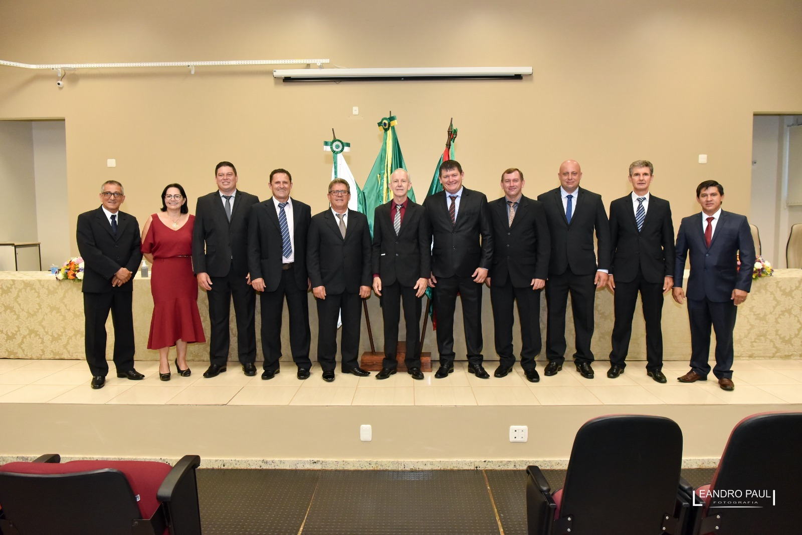
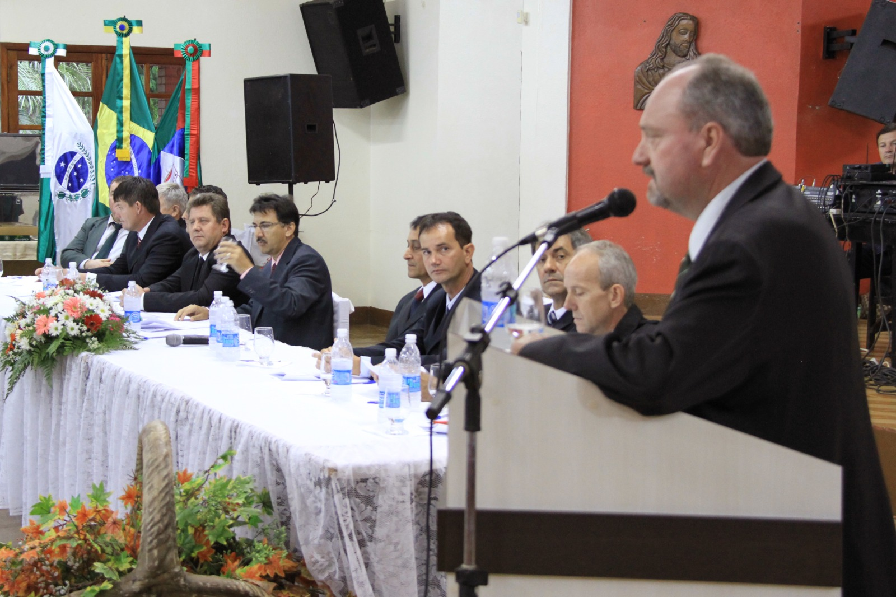
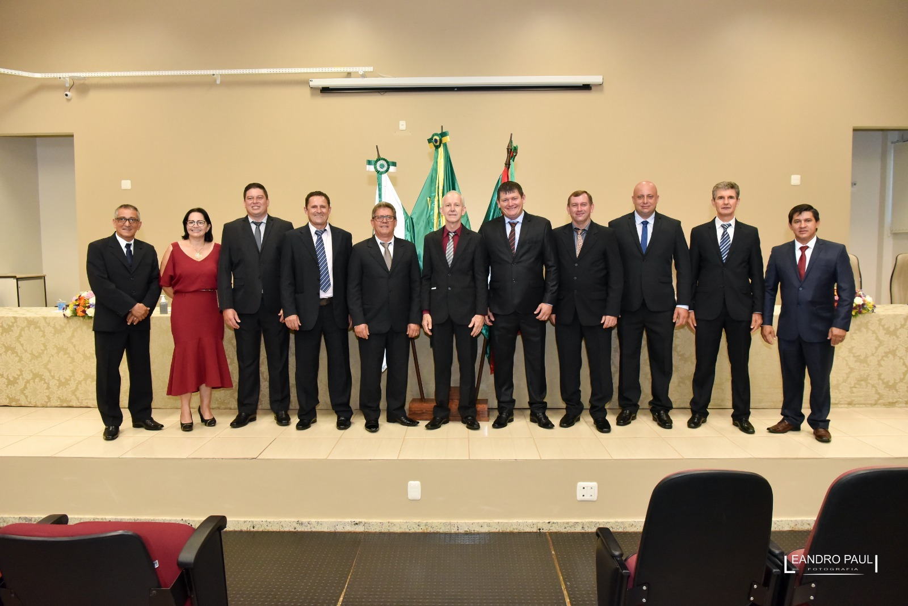
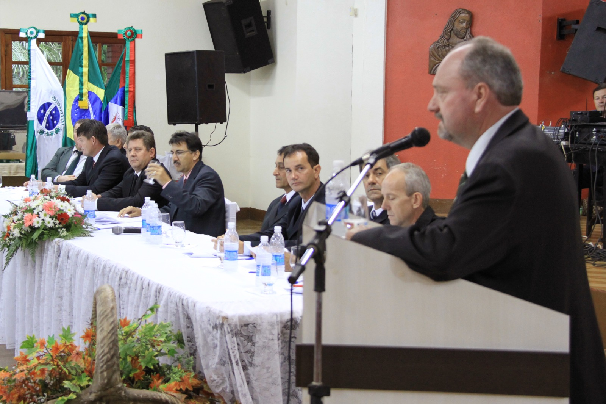
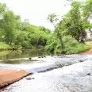
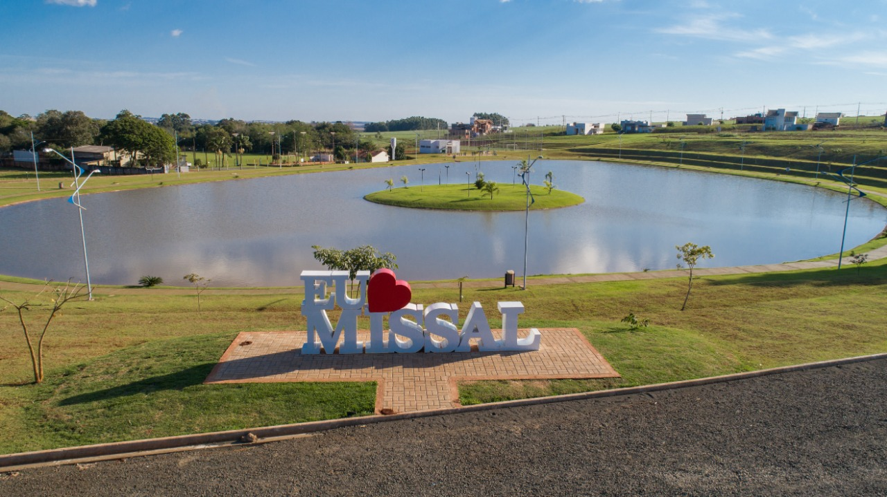
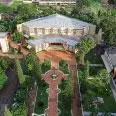

História
Missal, uma cidade acolhedora, que cultiva as tradições alemãs, herdadas de seus pioneiros, teve sua formação a partir do desmembramento do município de Medianeira e a data oficial da sua criação foi em 30 de dezembro de 1981, por meio da Lei Estadual n° 7.566. Teve sua Emancipação Política-administrativa, no dia 01 de fevereiro de 1983, data esta que marca a posse do primeiro prefeito do Município de Missal, Luciano Kreutz, além da primeira Câmara de Vereadores de Missal, tornando assim, Missal um Município independente. No dia seguinte, 02 de fevereiro de 1983, foi realizada a primeira reunião da Câmara Municipal de Missal. Na época, durante o mandato desta Legislatura, foram realizadas 209 Sessões Ordinárias, 89 Sessões Extraordinárias, 05 Sessões Solenes, além de 130 Projetos de Lei aprovados, 09 Projetos de Lei do Legislativo, 168 Requerimentos, 11 Decretos Legislativos, 51 Resoluções, 50 Convênios, (Referendados).
 


Turismo
terminal Turístico de Vila Natal, a Prainha Artificial de Missal, fica a cerca de 14 km do centro da cidade. Tem ampla área verde, banheiros, quiosques, churrasqueiras, área para camping, lanchonete, campo de futebol, quadra de areia e atracadouro para barcos. É o ambiente propício para passar os fins de semana e temporadas com a família. É uma opição para a pesca esportiva, Missal tem ótimo local para a prática. O Lago de Itaipu, onde ocorrem eventos esportivos de pesca e solta. Caso queira levar o pescado para casa, o município tem opções de pesque-pague.Conheça os principais pontos turísticos de Missal, como Praia de MISSAL terminal Turístico de Vila Natal, a Prainha Artificial de Missal, fica a cerca de 14 km do centro da cidade. Tem ampla área verde, banheiros, quiosques, churrasqueiras, área para camping, lanchonete, campo de futebol, quadra de areia e atracadouro para barcos. É o ambiente propício para passar os fins de semana e temporadas com a família. É uma opição para a pesca esportiva, Missal tem ótimo local para a prática. O Lago de Itaipu, onde ocorrem eventos esportivos de pesca e solta. Caso queira levar o pescado para casa, o município tem opções de pesque-pague.
Cultura
A cidade é conhecida por suas festas e tradições culturais uma das mais conhecidas é a A Festa Alemã de Missal é considera a maior festa típica do Oeste do Paraná. O evento foi criado em 2002 para preservar a cultura e, divulgar as tradições de geração a geração. A Deutsches Fest acontece todos os anos no fim de semana seguinte à Páscoa. Há muita alegria, chope, diversão, concursos da Rainha e Casal Fritz e Frida, músicas típicas, jogo do barril, brincadeiras e gastronomia típica.O Café evento ocorre na metade de junho, sempre próximo ao Dia dos Namorados. São servidos mais de 60 pratos, doces e salgados. O Café Colonial é tradicional e beneficente. O Provopar organiza o café com apoio de grande equipe de voluntários.Também é um otimo local para o Turismo Religioso há a Igreja Matriz, em formato de um Missal aberto visto do alto. Na comunidade de São Pedro, a escultura do padroeiro possui 4 metros de altura, atraindo turistas de diversas localidades, assim como a Gruta de São Cristóvão, padroeiro dos motoristas.